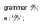

1. Grammar Lexicon
The lexicon of ANTLR is familiar to most programmers because it follows the syntax of C and its derivatives with some extensions for grammatical descriptions.
1.1. Comments
There are single-line, multiline, and Javadoc-style comments:
/** This grammar is an example illustrating the three kinds
* of comments.
*/
grammar T;
/* a multi-line
comment
*/
/** This rule matches a declarator for my language */
decl : ID ; // match a variable name
The Javadoc comments are hidden from the parser and are ignored at the moment. They are intended to be used only at the start of the grammar and any rule.
1.2. Identifiers
Token names always start with a capital letter and so do lexer rules as defined by Java’s Character.isUpperCase method. Parser rule names always start with a lowercase letter (those that fail Character.isUpperCase). The initial character can be followed by uppercase and lowercase letters, digits, and underscores. Here are some sample names:
ID, LPAREN, RIGHT_CURLY // token names/lexer rules
expr, simpleDeclarator, d2, header_file // parser rule names
Like Java, ANTLR accepts Unicode characters in ANTLR names:

To support Unicode parser and lexer rule names, ANTLR uses the following rule:
ID : a=NameStartChar NameChar*
{
if ( Character.isUpperCase(getText().charAt(0)) ) setType(TOKEN_REF);
else setType(RULE_REF);
}
;
Rule NameChar identifies the valid identifier characters:
fragment
NameChar
: NameStartChar
| '0'..'9'
| '_'
| '\u00B7'
| '\u0300'..'\u036F'
| '\u203F'..'\u2040'
;
fragment
NameStartChar
: 'A'..'Z' | 'a'..'z'
| '\u00C0'..'\u00D6'
| '\u00D8'..'\u00F6'
| '\u00F8'..'\u02FF'
| '\u0370'..'\u037D'
| '\u037F'..'\u1FFF'
| '\u200C'..'\u200D'
| '\u2070'..'\u218F'
| '\u2C00'..'\u2FEF'
| '\u3001'..'\uD7FF'
| '\uF900'..'\uFDCF'
| '\uFDF0'..'\uFFFD'
;
Rule NameStartChar is the list of characters that can start an identifier (rule, token, or label name):
These more or less correspond to isJavaIdentifierPart and isJavaIdentifierStart in Java’s Character class. Make sure to use the -encoding option on the ANTLR tool if your grammar file is not in UTF-8 format, so that ANTLR reads characters properly.
1.3. Literals
ANTLR does not distinguish between character and string literals as most languages do. All literal strings one or more characters in length are enclosed in single quotes such as ’;’, ’if’, ’>=’, and ’\’’ (refers to the one-character string containing the single quote character). Literals never contain regular expressions.
Literals can contain Unicode escape sequences of the form ’\uXXXX’ (for Unicode code points up to ’U+FFFF’) or ’\u{XXXXXX}’ (for all Unicode code points), where ’XXXX’ is the hexadecimal Unicode code point value.
For example, ’\u00E8’ is the French letter with a grave accent: ’è’, and ’\u{1F4A9}’ is the famous emoji: ’💩’.
ANTLR also understands the usual special escape sequences: ’\n’ (newline), ’\r’ (carriage return), ’\t’ (tab), ’\b’ (backspace), and ’\f’ (form feed). You can use Unicode code points directly within literals or use the Unicode escape sequences:
grammar Foreign;
a : '外' ;
The recognizers that ANTLR generates assume a character vocabulary containing all Unicode characters. The input file encoding assumed by the runtime library depends on the target language. For the Java target, the runtime library assumes files are in UTF-8. Using the factory methods in CharStreams, you can specify a different encoding.
1.4. Actions
Actions are code blocks written in the target language. You can use actions in a number of places within a grammar, but the syntax is always the same: arbitrary text surrounded by curly braces. You don’t need to escape a closing curly character if it’s in a string or comment: "}" or /*}*/. If the curlies are balanced, you also don’t need to escape }: {...}. Otherwise, escape extra curlies with a backslash: \{ or \}. The action text should conform to the target language as specified with the language option.
Embedded code can appear in: @header and @members named actions, parser and lexer rules, exception catching specifications, attribute sections for parser rules (return values, arguments, and locals), and some rule element options (currently predicates).
The only interpretation ANTLR does inside actions relates to grammar attributes; see Token Attributes and Chapter 10, Attributes and Actions. Actions embedded within lexer rules are emitted without any interpretation or translation into generated lexers.
1.5. Keywords
Here’s a list of the reserved words in ANTLR grammars:
import, fragment, lexer, parser, grammar, returns,
locals, throws, catch, finally, mode, options, tokens
Also, although it is not a keyword, do not use the word rule as a rule name. Further, do not use any keyword of the target language as a token, label, or rule name. For example, rule if would result in a generated function called if. That would not compile obviously.